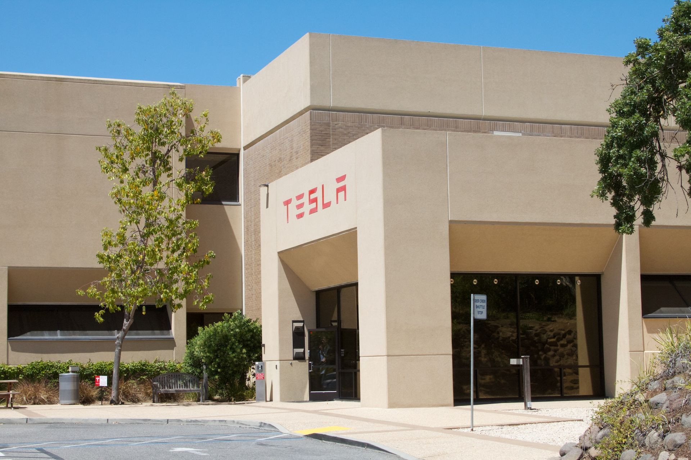
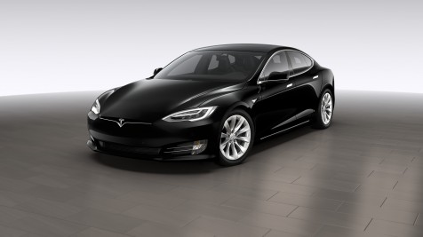
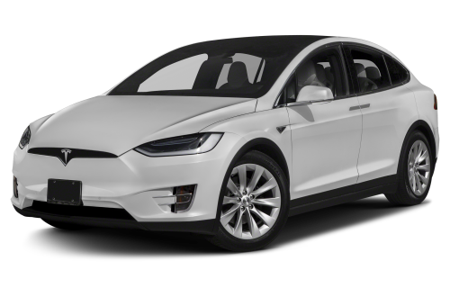
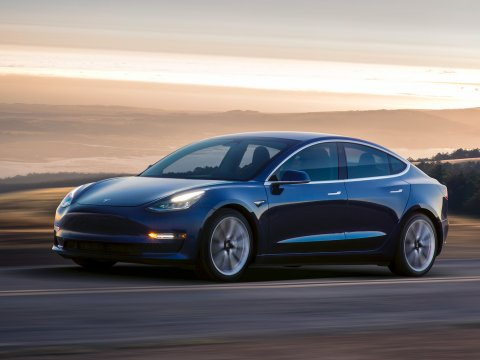

Tesla, Inc. (formerly Tesla Motors) is an American company that specializes in electric automotives, energy storage and solar panel manufacturing based in Palo Alto, California.
Founded in 2003, the company specializes in electric cars, lithium-ion battery energy storage, and residential photovoltaic panels (through the subsidiary company SolarCity).
The additional products Tesla sells include the Tesla Powerwall and Powerpack batteries, solar panels and solar roof tiles.

Model S is designed from the ground up to be the safest, most exhilarating sedan
on the road. With unparalleled performance delivered through Tesla's unique,
all-electric powertrain, Model S accelerates from 0 to 100 km/h in as little as
2.7 seconds. Model S comes with Autopilot capabilities designed to make your
highway driving not only safer, but stress free.

Awards:
- 2013 AutoGuide.com Reader's Choice Car of the Year
- Green Car Reports' Best Car To Buy 2013
- Time Magazine Best 25 Inventions of the Year 2012 award.
Model X is the safest, quickest and most capable sport utility vehicle in history.
With all-wheel drive and a 100 kWh battery providing 475 kilometers of range, Model X
has ample seating for seven adults and all of their gear. And it’s ludicrously fast,
accelerating from zero to 100 kilometers per hour in as quick as 3.1 seconds.
Model X is the SUV uncompromised.

- 2013 AutoGuide.com Reader's Choice Car of the Year
- Green Car Reports' Best Car To Buy 2013
- Time Magazine Best 25 Inventions of the Year 2012 award.
Designed to attain the highest safety ratings in every category, Model 3
achieves 220 miles of range while starting at only 35,000 USD before incentives.
Model 3 is a smaller, simpler, more affordable electric car then Model S.
Although it is our newest vehicle, Model 3 is not “Version 3” or the most
advanced Tesla. Like Model S, it is designed to be the safest car in its class.

- 2013 AutoGuide.com Reader's Choice Car of the Year
- Green Car Reports' Best Car To Buy 2013
- Time Magazine Best 25 Inventions of the Year 2012 award.
The quickest car in the world, with record-setting acceleration, range and
performance. As an all-electric supercar, Roadster maximizes the potential of
aerodynamic engineering—with record-setting performance and efficiency.
The first supercar to set every performance record and still fit seating for four.
A lightweight, removable Glass Roof stores in the trunk for an open-air, convertible
driving experience.

- 2013 AutoGuide.com Reader's Choice Car of the Year
- Green Car Reports' Best Car To Buy 2013
- Time Magazine Best 25 Inventions of the Year 2012 award.